layout: true <div class="my-header"><a href="https://neuronest.net/"><img src="images/icone_transparent.png" /></a></div> <div class="my-footer"><p>© 2020 Neuronest</p></div> --- class: center, middle # Machine Learning reminders Guillaume Ligner - Côme Arvis --- # Outline of the class - Part 1: Machine Learning reminders - Part 2: The fundamentals of Neural Networks - Part 3: Convolutional Neural Networks - Part 4: Deep Learning for Natural Language Processing 1 - Part 5: Deep Learning for Natural Language Processing 2 - Part 6: Unsupervised Generative Neural Networks --- # How this course works ### Lecture ~ 35% of the course ### Coding sessions ~ 65% of the course ### Project: Deep Learning NLP challenge,</br>released after part 4 - Work by pairs for labs - Evaluation on labs and project - Courses and labs on GitHub GitHub link: [https://github.com/Deep-Learning-courses/courses_labs](https://github.com/Deep-Learning-courses/courses_labs) Recommended reading: [deeplearningbook.org](http://www.deeplearningbook.org/) --- # What is Machine Learning? <br/> ###.center[“A computer program is said to learn from experience **$E$** with respect to some class of tasks **$T$** and performance measure **$P$**, if its performance at tasks in **$T$**, as measured by **$P$**, improves with experience **$E$**.”] > -- <cite>Tom Mitchell</cite> --- # The Task $T$ - Usually tasks that are too difficult to solve with fixed programs written -- - Complex tasks examples: - Learning a robot how to walk - Autonomous cars -- - Most common task types: - Classification - Regression - Transcription - Machine translation - Denoising - ... --- # The Performance $P$ - Basically a quantitative measure of the performance of a machine learning algorithm -- - Usually, it is specific to a given task **$T$** and the desired behavior of a system -- - Examples: - Accuracy, Brier score, F1 score and AUC for classification tasks - MSE, MAE for regression tasks - ... -- - We frequently build custom metrics to suit design choices that depend on the application -- - Always evaluate these performance measures on a **test set** of data --- # The Experience $E$ - In general, machine learning algorithms are allowed to experience an entire **dataset** -- - Three main different experience types: - Unsupervised learning algorithms experience datasets containing **features** only -- - Supervised learning algorithms experience datasets containing features with a **label** or **target** -- - Reinforcement learning algorithms experience an **environment** -- - We usually describe a dataset with a **design matrix**, which contains a different multi-dimensional example in each row --- # Unsupervised learning - Usually the task is to find the "best" **representation** of the data - In many cases we are looking to preserve **as much information** from $X$ as possible while obtaining a **simpler** and more accessible representation of $X$ .center[ 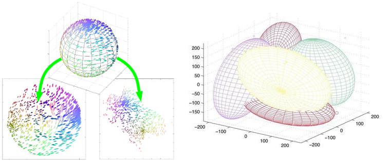 ] .left-column50.small[ - t-SNE dimension reduction example ] .right-column50.small[ - Multivariate gaussian mixture model clustering example ] --- # Supervised learning: classification tasks .center[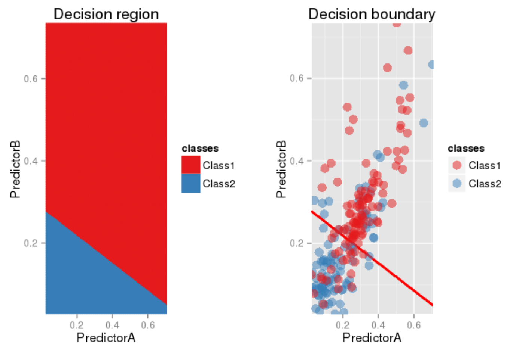] - A **classification task** aims to predict which class a data point is part of - In this case, the target value is **discrete** and belongs to a **finite number** of values - Some classification algorithms: logistic regression, perceptron, decision tree, KNN, SVM, **neural networks**, ... --- # Supervised learning: regression tasks .center[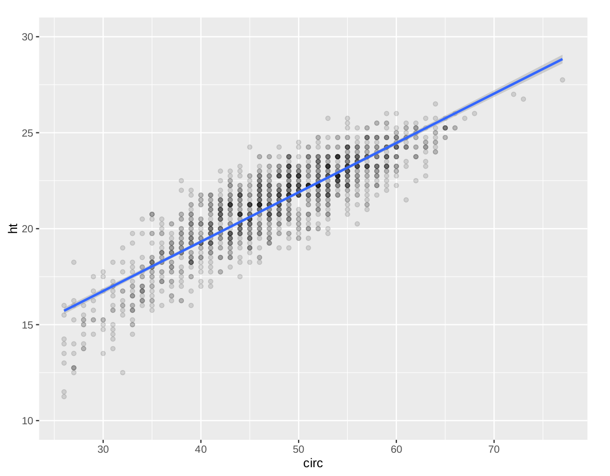] - A **regression task** aims to associate a real-valued prediction for each data point - Some regression algorithms: linear regression, decision tree, SVR, **neural networks**, ... --- # Machine learning: often a non-linear problem - Possible solution: find a **non-linear transformation** of the features and apply a **linear decision** in the new projected space .center[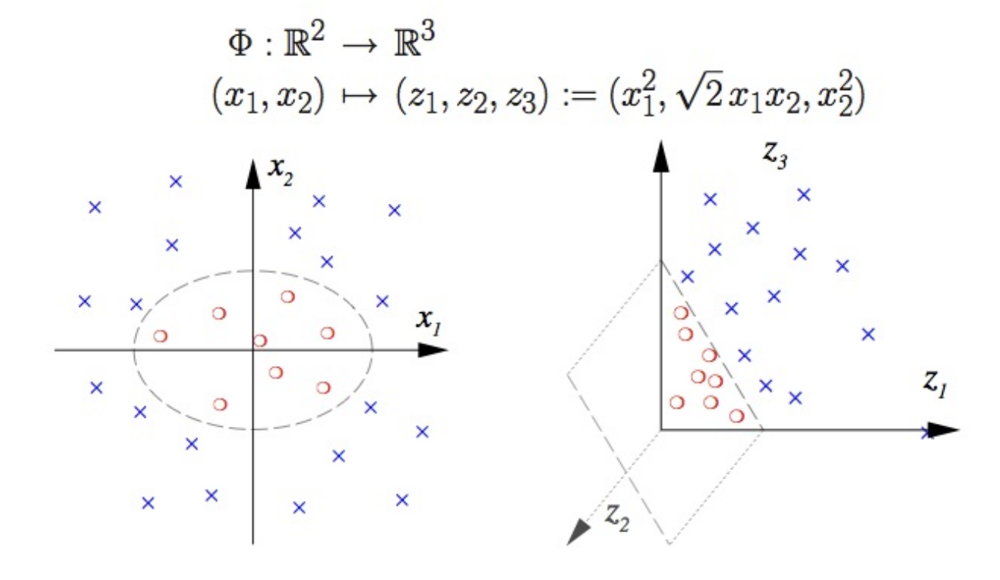] --- # Machine learning: often a non-linear problem - Other solution: design an algorithm that can intrinsically deal with non-linear interactions .center[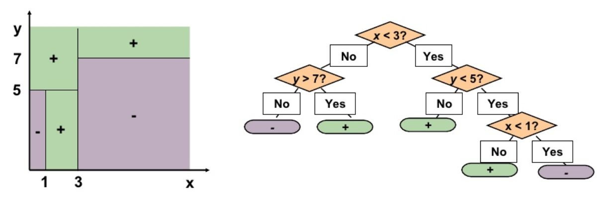] .center[Decision tree algorithm as example] --- # Linear Regression as Maximum Likelihood - Let $\mathcal{D} = ${$ (\mathbf{x}_1, y_1), \dotsc, (\mathbf{x}_n, y_n)$} be a training set of i.i.d variables<br/>with: $\mathbf{x}_i \in \mathbb{R}^p$ a feature sample and $y_i \in \mathbb{R}$ a target<br/><br/> - Our goal, in order to predict $Y$ given $\mathbf{X}$, is to estimate a conditional probability $P(Y | \mathbf{X} ; \mathbf{\theta})$ - Then, the conditional maximum likelihood estimator is: .center[$\hat{\mathbf{\theta}}_{ML} = \underset{\mathbf{\theta}}{\operatorname{argmax}} P(Y | \mathbf{X} ; \mathbf{\theta})$] --- # Linear Regression as Maximum Likelihood - Our linear model is assumed to take the following form: .center[$y_i = \mathbf{\theta}^\top \mathbf{x}_i + \sigma \epsilon_i$] .center[(we have volontary omitted the bias term here for simplicity)] - $\sigma \epsilon_i$ is the inherent noise in our data, unhandlable by our linear model, with some variance $\epsilon_i$ - We are going to make the asumption that the noise is gaussian and is normally distributed with mean 0: .center[$p(\epsilon_i) = \mathcal{N}(0, 1)$] - That implies: .center[$p(y_i | \mathbf{x}_i ; \mathbf{\theta}, \sigma) = \mathcal{N}(y_i ; \mathbf{\theta}^\top \mathbf{x}_i, \sigma^2) = \frac{1}{\sqrt{2 \pi \sigma^2}} \exp{(-\frac{(y_i - \langle {\mathbf{x_i}, \mathbf{\theta}} \rangle) ^2}{2 \sigma^2})}$] --- # Linear Regression as Maximum Likelihood - In addition, we have: $p(y_1, \dotsc, y_n | \mathbf{x}_1, \dotsc, \mathbf{x}_n ; \mathbf{\theta}, \sigma) = \prod_1^n p(y_i | \mathbf{x}_i ; \mathbf{\theta}, \sigma)$ - Maximize this conditional distribution is equivalent to minimizing the following negative log-likelihood: $$ \begin{equation} \- \sum_1^n \log p(y_i | \mathbf{x}_i ; \mathbf{\theta}, \sigma) \\\\ = - \sum_1^n \log \mathcal{N}(y_i ; \mathbf{\theta}^\top \mathbf{x}_i, \sigma^2) \\\\ = n \log \sigma + \frac{n}{2} \log(2 \pi) + \frac{1}{2} \sum_1^n \frac{(y_i - \langle {\mathbf{x}_i, \mathbf{\theta}} \rangle) ^2}{\sigma^2} \end{equation} $$ --- # Linear Regression as Maximum Likelihood - It naturally leads to the MSE minimization with respect to $\mathbf{\theta}$: .center[$\hat{\mathbf{\theta}} = \underset{\mathbf{\theta}}{\operatorname{argmin}} \frac{1}{2n} \sum_1^n (y_i - \langle {\mathbf{x}_i, \mathbf{\theta}} \rangle) ^2$] - Hence, it turns out that the maximum likelihood estimate for our linear model is the hyperplan which minimizes the sum of squared errors --- # Linear Regression: closed form Compact and closed forms: - We denote $\mathbf{X} \in \mathbb{R}^{n \times p}$ our training design matrix, and $\mathbf{y} \in \mathbb{R}^n$ our target vector - The minimization problem over $\mathbf{\theta}$ can be rewritten as: .center[find $\hat{\mathbf{\theta}} = \underset{\mathbf{\theta}}{\operatorname{argmin}} \frac{1}{2n} || \mathbf{y} - \mathbf{X} \mathbf{\theta} ||_2 ^2 = \underset{\mathbf{\theta}}{\operatorname{argmin}} J(\theta)$] with $J$ being our loss function we want to minimize - $\nabla J(\theta) = 0 \Leftrightarrow \frac{1}{n} \mathbf{X}^\top (\mathbf{X} \hat{\theta} - \mathbf{y}) = 0 \Leftrightarrow \hat{\theta} = (\mathbf{X}^\top \mathbf{X})^{-1} \mathbf{X}^\top \mathbf{y}$ The last equation is known as the **normal equation** - Problem: too expensive to compute if $n$ and $p$ are large - Usually we prefer an iterative approach: the **gradient descent** --- # Gradient descent - Iterative algorithm using the information from the gradient of the loss function to make a step - For step $t$, make a step forward the negative gradient:<br/> .center[$\mathbf{\theta}^{t+1} := \mathbf{\theta}^{t} - \epsilon \nabla_\mathbf{\theta} J(\mathbf{\theta})$] .center[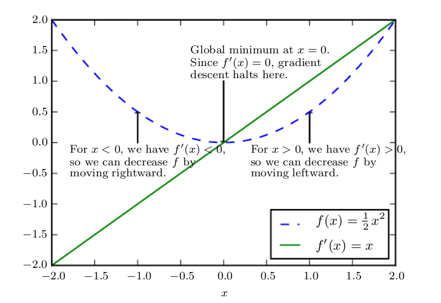 ] <sub><sup>.center.small[Unidimensional example of how the gradient descent uses the derivatives to reach to a minimum] --- # Gradient descent .center[<img src="images/gradient_descent.gif" style="width: 750px;" /> ] <sub><sup>.center.small[Left : visualization of the loss function during the optimization of the parameter p] .center.small[Right : visualization of the linear predictions $x \cdot p$ fitting the target $t$] --- # Fitting the signal or fitting the noise - In the real world, machine learning is **not only** an optimization problem - Often, we collect noisy data:<br/> measurement errors, outliers, extra randomness, ... - We want to capture the **underlying phenomenon** by being robust to the noise .center[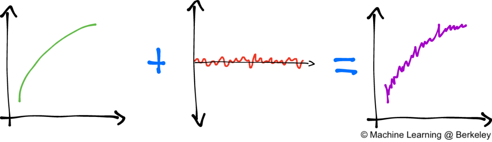 ] <sub><sup>.center.small[We would like to retrieve the underlying phenomenon from the noisy data] --- # Overfitting and penalization - Modifying the loss to include a **penalization term**, here the penalization $L2$, or **ridge** penalization:<br/> .center[$J(\mathbf{\theta}) = MSE_{train} + \lambda || \mathbf{\theta} ||^2_2$] .center[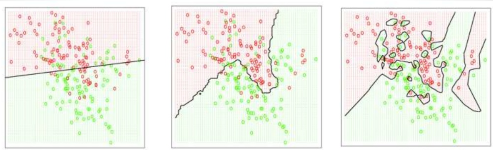 ] | Underfitting | Right fitting | Overfitting | | ------------- | ------------- | ------------- | | Excessive $\lambda$ | Appropriate $\lambda$ | $\lambda \to 0$ | | High bias | Optimal bias-variance tradeoff | High variance | | Model too simple | Optimal model capacity | Model too complex | <sub><sup>Left: underfitting case with an excessive $\lambda$ value. The learned function does not have the sufficient **capacity**<br/> Center: underfitting case with an excessive $\lambda$ value. The learned function does not have the sufficient **capacity**<br/> Right: overfitting case with $\lambda \to 0$ . The learned function does not have the sufficient **capacity** --- # Bias-variance tradeoff Bias-variance error decomposition:<br/> .center[ $MSE\_{train} = \mathbb{E}[(\hat{\mathbf{\theta}}\_{train} - \mathbf{\theta})^2] = Bias(\hat{\mathbf{\theta}}\_{train})^2 + Var(\hat{\mathbf{\theta}}\_{train})$ $ = (\mathbb{E}[\hat{\mathbf{\theta}}\_{train}] - \mathbf{\theta})^2 + Var(\hat{\mathbf{\theta}}\_{train})$ ] - The bias measures the expected deviation from the true value of the parameter - The variance provides a measure of the deviation from the expected estimator value that any particular sampling of the data is likely to cause .center[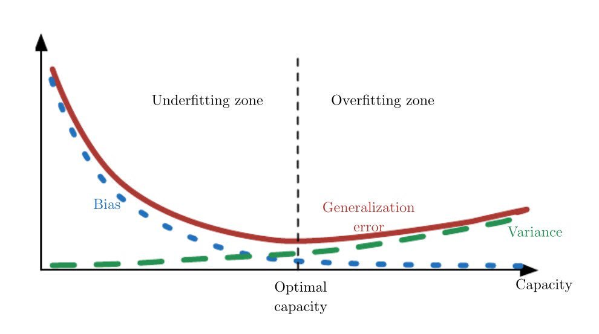 ] --- # Cross-validation - **K-fold cross-validation** allows us to evaluate the **generalization error** of our model - Pick a **random partition** $I_1, \ldots, I_K$ of {$1, \ldots, n$}, with $n$ the total number of samples, where $|I_k| \approx \frac{n}{K}$ for any $k = 1, \ldots, K$ - For example, with $K=10$ : .center[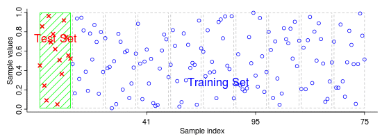 ] <sub><sup>.center.small[We evaluate the model error $K$ times on the test sets, then we average them as our global generalization error] --- # Logistic Regression .center[<img src="images/sigmoid.png" style="width: 300px;" />] - Traditional model in **binary classification**: - $prediction = \begin{cases} 1 & \quad \text{if } P(y=1|x) \geq 0.5\\\\ 0 & \quad \text{if } P(y=1|x) < 0.5 \end{cases}$ - The logistic regression is based on the **sigmoid function**: $\sigma(x)$ - $\sigma(x) : \mathbb{R} \mapsto ]0,1[$, thus used to modelize a probability distribution --- # Logistic Regression - We have: $\sigma(x) = \frac{1}{1 + \exp(-x)}$ and $\sigma'(x) =\sigma(x)(1 - \sigma(x))$ - More generally, $\mathbf{x}$ is usually a vector in $m$ dimensions - $P(y=1|\mathbf{x})$ modelized by $\sigma(\mathbf{\theta}^T\mathbf{x})$ $= \frac{1}{1 + \exp(-\mathbf{\theta}^T\mathbf{x})}$</br> with $\mathbf{x} \in \mathbb{R}^m$, the feature vector, $\mathbf{\theta} \in \mathbb{R}^m$ the parameter vector - Usually for binary classification we use the **binary cross-entropy** loss: $$J(\mathbf{\theta}) = -\frac{1}{n}\sum_{i=1}^{n}y_i\cdot\log(\sigma(\theta^T\mathbf{x_i})) + (1-y_i)\cdot\log(1-\sigma(\theta^T\mathbf{x_i}))$$ --- # Logistic Regression On the one hand, the logistic regression outputs non-linear predictions - When $\sigma(\theta^{T} x)$ is close to $0.5$, so $\theta^{T} x$ close to $0$, a **small increment** on $x$ leads to a **significant change in probability** - When $\sigma(\theta^T x)$ is already high or low, a much **bigger increment** on $x$ is needed to get the same amount of change in probability - Useful as it relates to real world phenomena, for instance: - physical performance with respect to training increments - happiness sensation with respect to wealth increments - ... --- # Logistic Regression On the other hand, the logistic regression is of **Generalized Linear Model** (GLM) type - The sigmoid function is not linear but the logistic regression model **boundary decision** function is **linear**: .center[ $prediction = \begin{cases} 1 \text{ if } \sigma\_{\theta}(\mathbf{x}) \geq 0.5\\\\ 0 \text{ if } \sigma\_{\theta}(\mathbf{x}) < 0.5 \end{cases}$ $\Leftrightarrow$ $ \begin{cases} 1 \text{ if } \mathbf{\theta}^T\mathbf{x} \geq 0\\\\ 0 \text{ if } \mathbf{\theta}^T\mathbf{x} < 0 \end{cases}$ ] .center[Separation between $1$s and $0$s predicted samples is the plane $\theta^T\mathbf{x} = 0$] --- # Logistic Regression - In weighted sum, $\text{feature} \times \text{weight} \le 0$ may be seen as an inhibitory neurotransmitter on neuron - Output signal is $\sigma(\beta_1\cdot x_1 + \dotsc + \beta_n\cdot x_n + bias) \mapsto \left]0, 1\right[$ .right-column50.small[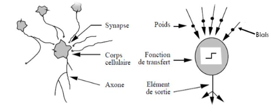] .left-column50.small[<img src="images/artificial_neuron.gif" style="width: 400px;" />] --- # Deep Learning class outline - Understand Deep Learning - How/why it works - When to use it and when to prefer standard ML - Have a broad understanding of its applications -- <br> - Practical matters - Implement neurals nets with different frameworks - Implement low level concepts such as backpropagation, regularization --- # Deep Learning - Can learn non-linear, hierarchical, abstract data representations - Differentiable functions allowing gradient based optimization - Complex models able to learn all sorts of input to output relations -- __Universal Approximation Theorem__: ###.center[“A feedforward network with a single layer is sufficient to represent any function, but the layer may be infeasibly large and may fail to learn and generalize correctly”] > -- <cite>Ian Goodfellow</cite> --- # Machine Learning weaknesses - Difficulty to engineer features from signals that are naturally processed by our brains, without abstraction .center[<img src="images/ml_weaknesses.png" style="width: 600px;" />] - Some examples : Tasks related to **audio** signals, computer **vision**, natural **language** processing --- # ML versus DL Machine Learning - A human worker thinks of smart features "relevant for the prediction" - Algorithm finds and then learns the relation from smart features to output .grey[Deep Learning] - .grey[ Combines and recombines the inputs from layer to layer ] - .grey[ Relation between final abstract features and output is linear ] .center[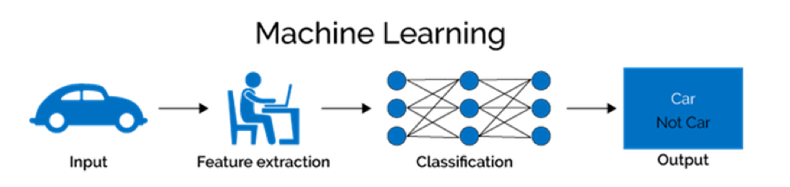] --- # ML versus DL .grey[Machine Learning] - .grey[A human worker thinks of smart features "relevant for the prediction"] - .grey[Algorithm finds and then learns the relation from smart features to output] Deep Learning - Combines and recombines the inputs from layer to layer - Relation between final abstract features and output is linear .center[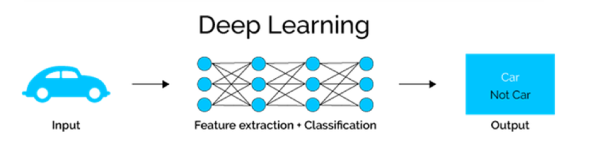] --- # ML versus DL .grey[Machine Learning] - .grey[A human worker thinks of smart features "relevant for the prediction"] - .grey[Algorithm finds and then learns the relation from smart features to output] Deep Learning - Combines and recombines the inputs from layer to layer - Relation between final abstract features and output is linear .center[] - classification: usually logistic regression comes last on final features - regression: usually linear regression comes last on final features --- # Libraries & Frameworks <br></br> .center[<img src="images/frameworks.png" style="width: 700px;" /><br/><br/>] --- # Computation Graph - A Neural Networks is simply a math function - A very deeply nested function: - $f(x) = g[f_1(x), \dotsc, f_n(x)]$ - $f_1(x) = h_1[k_1(x), \dotsc, k_n(x)], \dotsc, f_n(x) = h_n[l_1(x), \dotsc, l_n(x)]$ - $k_1(x) = \dotsc $ and so on .right-column30.small[<img src="images/computation_graph.png" style="width: 290px;" />] .left-column70[ - Goal is to unfold $f$ and into "elementary" operations: - activations functions: sigmoid, tanh, reLU... - matrix products - element-wise sums and products ] --- # Computation Graph - To vizualize the architecture of your network - To compute the gradient of the loss with respect to the network parameters - We know $\frac{\mathrm d output}{\mathrm d input}$ for any elementary operation in the graph - We use the __chain rule__ (see next course) to retrieve the derivative of the loss with respect to any parameter - To update the network parameters using the gradient --- # Computation Graph - A simple example <br> <br> <br> .center[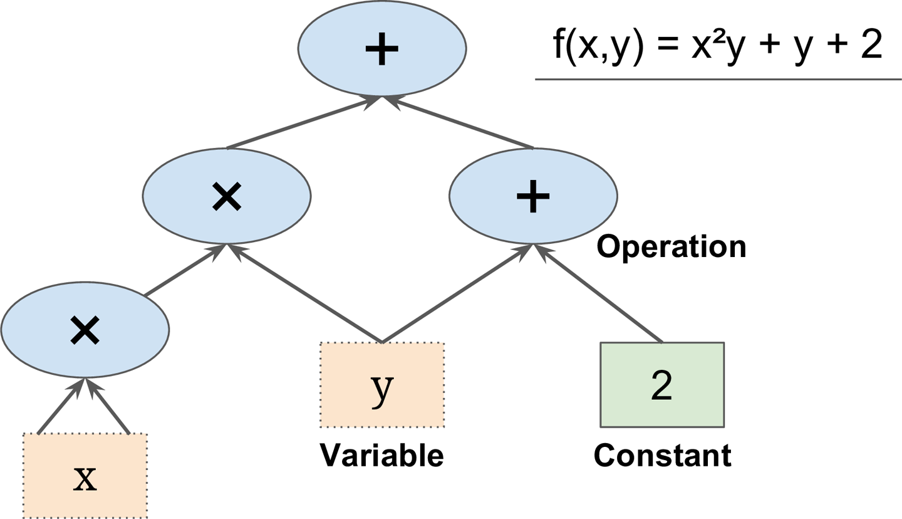<br/><br/>] --- # Computation Graph - A Deep Learning example .center[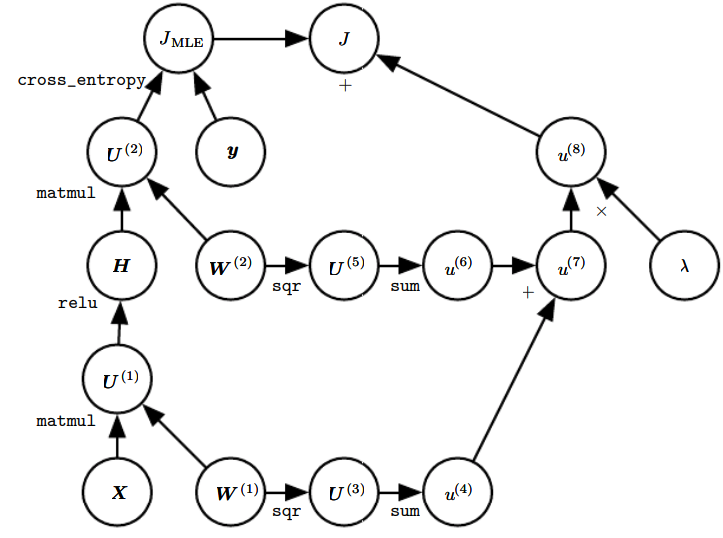] <sub>.center.small[Computation graph of the loss of the Neural Net, with $l_2$ regularization]